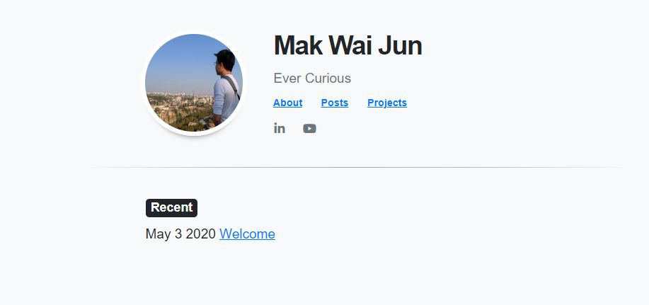

Update
Another week - another revision.
Welcome to version two of site - rebuilt from scratch with a generoues does of customised appropriated snippets of code.
This guide in particular was helpful in laying out the groundwork from Hugo.
Still fairly minimalist, but I have much better control and understanding of where the various elements are situated.
Key take-aways from this session were:
- A slightly deeper understanding of the hugo framework.
- Hosting static page on pure html/css - and layering it over the Hugo frame.
To do
Sort out the About and Resume pages. These will be relatively fixed and static.
Next challenge will be to customise the projects page. Would
Will probably paint on some CSS later.
Otherwise - does seem the minimum framework is in place.
For reference, this was the old version - based on the Devise template from the Hugo site. 